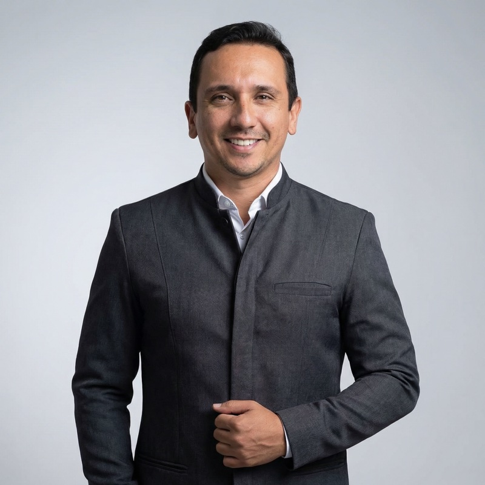

Protocolo Dentário em Teresina
Saia da clínica com dente fixo
no mesmo dia
na Zona Leste
Substitua a dentadura por prótese fixa sobre implantes. Técnica exclusiva do Dr. Valdemir Neto com carga imediata: você entra sem dente e sai com sorriso novo.
Avaliar meu caso
Isso te incomoda todo dia?
A dentadura não foi feita pra durar a vida inteira
Prótese que solta ao falar, comer ou rir e te deixa em situação constrangedora
Vergonha de sorrir em fotos, eventos ou na frente da família
Dor, machucados ou inflamações causadas pela prótese móvel apertada
Sabor da comida prejudicado pela placa que cobre o céu da boca
O protocolo dentário resolve tudo isso de uma vez. E com a técnica do Dr. Valdemir, em muito menos tempo do que você imagina.
Cansou da dentadura?
Descubra se você pode trocar agora mesmo
Protocolo dentário com carga imediata: dente fixo no mesmo dia
O protocolo é uma prótese fixa parafusada sobre 4 a 6 implantes que substitui toda a arcada. Não sai pra dormir, não tem placa no céu da boca e devolve a mastigação como se fossem seus dentes naturais — porque pra todos os efeitos, funcionam como eles.
A técnica de carga imediata do Dr. Valdemir Neto permite que, no mesmo dia da cirurgia, você saia com a prótese provisória já instalada. Sem ficar meses esperando, sem voltar pra dentadura no meio do caminho.
Cada caso tem o protocolo certo
Soluções de protocolo pra cada situação
Protocolo Superior
Arcada de cima fixa em 4 a 6 implantes
Solução completa pra quem perdeu os dentes de cima ou usa dentadura superior. Acaba com o céu da boca coberto e devolve o paladar.
Protocolo Inferior
Arcada de baixo que não solta
A prótese inferior é a que mais incomoda no dia a dia — solta o tempo todo. O protocolo inferior fixa de vez e devolve a confiança de mastigar qualquer coisa.
All-on-4
4 implantes inclinados, arcada completa
Técnica que aproveita o osso disponível e evita enxerto na maioria dos casos. Indicada pra quem perdeu osso por usar dentadura há muitos anos.
All-on-6
6 implantes, distribuição reforçada
Recomendado pra casos com osso melhor preservado ou pacientes que mastigam com mais força. Maior estabilidade e durabilidade ainda maior.
Carga Imediata
Sai com dente fixo no mesmo dia
A prótese provisória é instalada já na cirurgia, em 24h. Você nunca volta a usar dentadura nem fica sem dentes em nenhum momento do tratamento.
Zircônia, Porcelana ou Resina
O material certo pro seu caso
A prótese definitiva pode ser feita em diferentes materiais. Avaliamos estética, função e investimento pra recomendar a melhor opção pra você.
Não sabe qual é o seu caso?
A gente avalia e te diz qual protocolo serve pra você
A clínica certa pra resolver de vez a sua dentadura
Carga imediata
Você sai da cirurgia com a prótese provisória já instalada. Sem voltar pra dentadura, sem ficar sem dentes em nenhum momento.
Solução definitiva
Protocolo bem planejado e bem feito dura décadas. Investimento único que elimina anos de gasto com refazer dentadura.
Implantodontia em Teresina
Dr. Valdemir Neto é referência em implantes e reabilitação oral na Zona Leste. Planejamento digital e técnica exclusiva de prótese rápida.
Como funciona
Da dentadura ao dente fixo em 3 passos
Avaliação e planejamento digital
Exame clínico, tomografia e planejamento digital dos implantes. Você descobre se é candidato à carga imediata, quantos implantes precisa e quanto custa exatamente.
Cirurgia + prótese no mesmo dia
Colocação dos implantes com anestesia local e instalação da prótese provisória fixa em até 24 horas. Você sai do consultório com dente novo.
Prótese definitiva e acompanhamento
Após a osseointegração dos implantes, instalamos a prótese definitiva no material escolhido. Acompanhamento contínuo pra garantir durabilidade.
Pronto pra mudar?
Comece pela avaliação. O resto é com a gente.
Pacientes que voltaram a sorrir
Usei dentadura por 12 anos. Fiz o protocolo superior com o Dr. Valdemir e saí no mesmo dia com os dentes fixos. Voltei a comer carne, churrasco, tudo. Mudou minha vida.
— Antônio, 58 anos
Minha dentadura caía toda hora e eu evitava sair de casa. Hoje, com o protocolo, esqueci que tenho prótese. Mastigo tudo, sorrio sem medo e ninguém percebe.
— Maria de Jesus, 64 anos
Achei que ia ser um sofrimento de meses. O Dr. Valdemir colocou os implantes e a prótese no mesmo dia. Em uma semana eu já estava na rotina normal.
— José Carlos, 55 anos
Perguntas frequentes sobre protocolo dentário
O valor varia conforme o número de implantes (4 ou 6 por arcada), o material da prótese definitiva (zircônia, porcelana ou resina) e a necessidade de enxerto ósseo. Damos o orçamento exato após a avaliação clínica e a tomografia. Trabalhamos com parcelamento.
Na maioria dos casos, a prótese provisória fixa é instalada no mesmo dia da cirurgia (carga imediata) — em até 24 horas. A prótese definitiva é colocada depois da osseointegração dos implantes, que leva de 3 a 6 meses. Mas você nunca fica sem dentes durante o tratamento.
É outra realidade. A dentadura é móvel, solta, machuca, cobre o céu da boca e prejudica o paladar e a mastigação. O protocolo é fixo, parafusado em implantes, não sai pra dormir e devolve a função de mastigar como dentes naturais. A diferença em qualidade de vida é gigante.
Sim. Mesmo quem usa dentadura há décadas costuma ser candidato. Pode haver perda óssea, mas técnicas como All-on-4 (com implantes inclinados) aproveitam o osso disponível e evitam enxerto na maioria dos casos. Avaliamos pela tomografia.
A prótese definitiva, com manutenção periódica, dura facilmente mais de 20 anos. Os implantes, quando bem feitos e bem cuidados, podem durar a vida toda. O segredo é avaliação anual e higiene correta — orientamos detalhadamente como cuidar.
Durante a cirurgia, não. A anestesia local bloqueia toda a sensibilidade. No pós-operatório, há um desconforto controlado pela medicação prescrita, parecido com o de uma extração. A maioria dos pacientes volta à rotina em 3 a 5 dias.
Cada material tem um perfil. Resina é mais acessível e leve, ótima como provisória ou definitiva inicial. Porcelana tem estética superior e excelente durabilidade. Zircônia é o material mais avançado, com aparência mais natural e resistência máxima. Recomendamos baseado no seu caso e investimento.
Localização
Fácil acesso na Zona Leste de Teresina
Av. Lindolfo Monteiro, 813 — Fátima
Teresina, Piauí
Sua dentadura tem dias contados
Faça uma avaliação e descubra se você é candidato a sair com dente fixo no mesmo dia. Sem compromisso, planejamento digital e orçamento transparente.